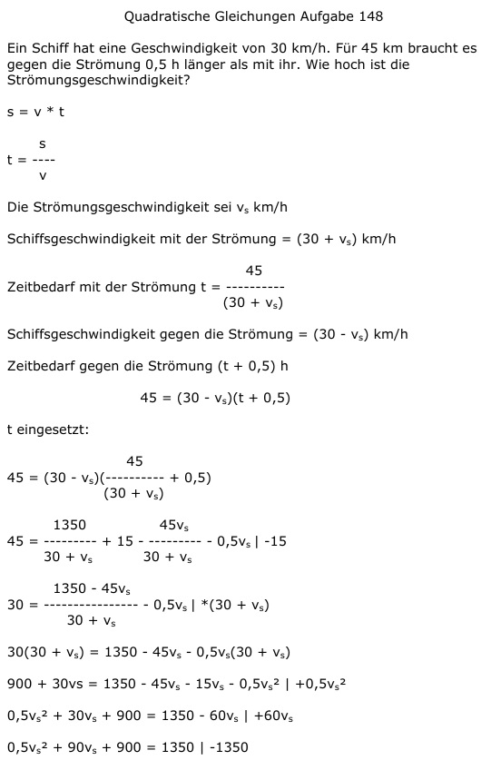

Aufgabe 148 Ein Schiff hat eine Geschwindigkeit von 30 km/h. Für 45 km braucht es gegen die Strömung 0,5 h länger als mit ihr. Wie hoch ist die Strömungsgeschwindigkeit? s = v * t s t = --- v Die Strömungsgeschwindigkeit sei vs km/h Schiffsgeschwindigkeit mit der Strömung = (30 + vs) km/h 45 Zeitbedarf mit der Strömung t = ---------- (30 + vs) Schiffsgeschwindigkeit gegen die Strömung = (30 - vs) km/h Zeitbedarf gegen die Strömung (t + 0,5) h 45 = (30 - vs)(t + 0,5) t eingesetzt: 45 45 = (30 - vs)(--------- + 0,5) 30 + vs 1350 45vs 45 = --------- + 15 - --------- - 0,5vs |-15 30 + vs 30 + vs 1350 - 45vs 30 = --------------- - 0,5vs |*(30 + vs) 30 + vs 30(30 + vs) = 1350 - 45vs - 0,5vs(30 + vs) 900 + 30vs = 1350 - 45vs - 15vs - 0,5vs2 |+0,5vs2 0,5vs2 + 30vs + 900 = 1350 - 60vs +60vs 0,5vs2 + 90vs + 900 = 1350 |-1350 0,5vs2 + 90vs - 450 = 0 |:0,5 vs2 + 180vs - 900 = 0 p, q - Formel p = 180 ; q = -900  vs1,2 = -90 ± 94,9 vs1 = -90 + 94,9 = 4,9 km/h vs2 = -90 - 94,9 = -184,9 km/h keine Lösung, negative Geschwindigkeit